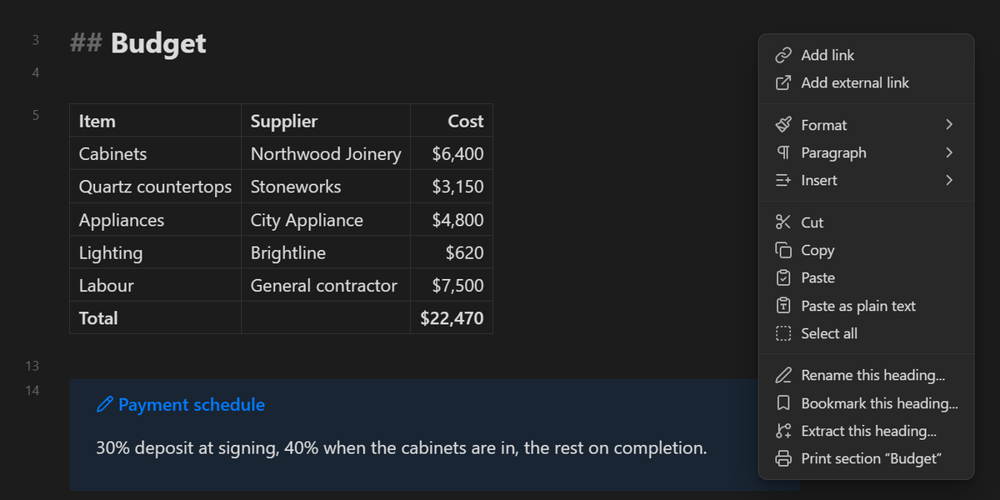
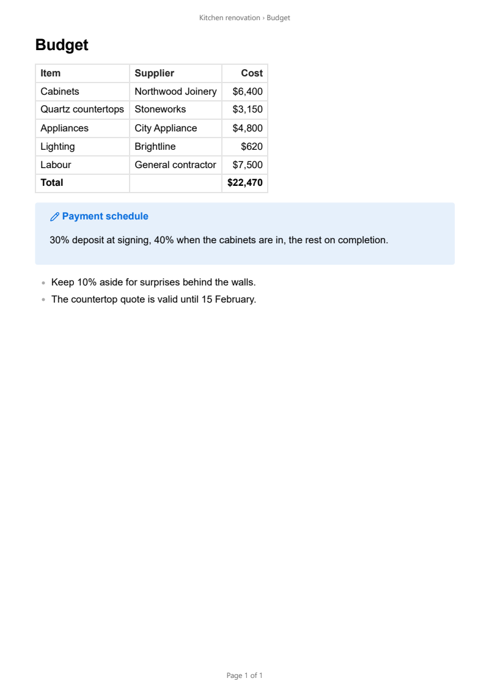

A free plugin for Obsidian that prints just part of a note — the text you select, or the section under the cursor — through the system print dialog, to paper or to PDF. Obsidian can export a whole note to PDF, but it cannot print, and it cannot print part of a note at all. Print Section renders exactly the part you choose the way Reading view does — callouts, tables, code, images, embeds, diagrams and maths — and hands it to the print dialog.
The printout is built the way Obsidian builds its own PDF export, so themes and CSS snippets written for PDF export style it too, and a note's cssclasses carry over. Mermaid diagrams, maths and embeds that draw themselves after the note renders are waited for before the page goes to the printer. Tables and styled text made with HTML Table Toolbar and HTML Font Toolbar print as they appear on screen — though Print Section needs neither of them, and they need nothing from it.
Print Section is for the desktop only: printing goes through the operating system's print dialog, which Obsidian's mobile apps do not offer. That dialog is your system's, so printer, copies, paper size and orientation are chosen there; to get a PDF, choose Microsoft Print to PDF on Windows or the PDF button on macOS. Obsidian waits while the dialog is open, so if it ever seems frozen with Preparing to print… on screen, the dialog is behind another window — bring it forward with Alt+Tab, then print or cancel. And if what you want is a PDF file of a whole note every time, with no dialog in between, Obsidian's own Export to PDF is the quicker tool.
Free and open source, for Obsidian on the desktop — available in the official Obsidian community plugin directory. In Obsidian, go to Settings → Community plugins → Browse and search for “Print Section”, or open the directory page below.
Install from Obsidian Community Plugin on GitHubManual install (alternative): download main.js, manifest.json, and styles.css from the latest release into <your vault>/.obsidian/plugins/print-section/, then enable the plugin in Settings → Community plugins.


Print Section is free, open source, has no ads, and collects nothing about you — it runs entirely inside your vault and never touches the network; your notes go from Obsidian to your printer and nowhere else. That is the way an Obsidian plugin ought to work, and it is also why plugins like this are hard to sustain: there is no data to sell and no subscription to bill, so nothing pays for the work behind them.
Small tools take real time to build and, more importantly, to keep alive. Obsidian moves forward, printing changes underneath a plugin, bugs surface in real use, and features get added because someone asked. A donation, however small, is what makes that continued attention possible — and it directly funds the next free tool as well as the upkeep of this one.
If this plugin saved you from copying a section into a new note just to print it, please consider chipping in. It genuinely makes the difference between a project that keeps improving and one that quietly stops.
DonateSecure payment through PayPal — no account required, and any amount is appreciated. Thank you for supporting independent, free software.